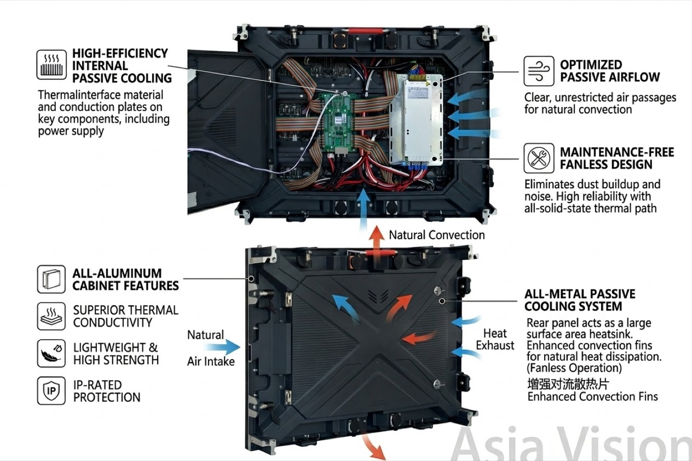
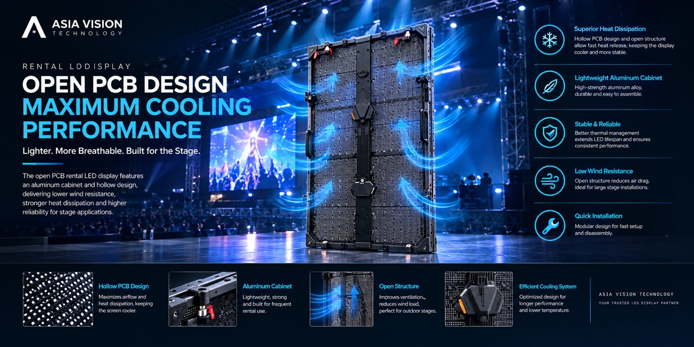
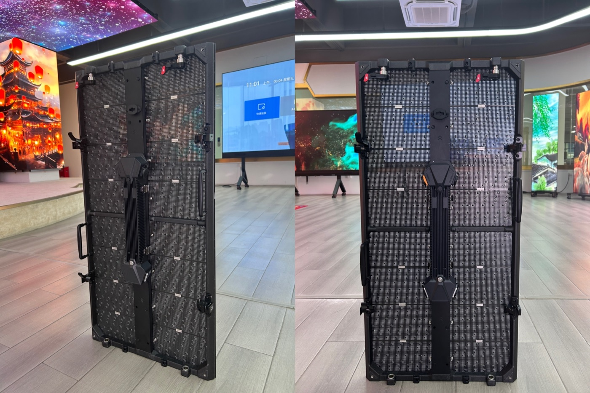

By David
Why does LED display cooling matter? Heat is the main cause of LED display failure and shortened life. Every LED and driver produces heat, and if it cannot escape, the screen dims, ages faster, and eventually fails. Proper LED display cooling and ventilation keeps the internal temperature within range, which protects the screen and extends its service life. This 2026 guide explains how to plan cooling for any LED installation, from a small indoor sign to a large outdoor wall in a hot climate.

An LED screen is an electrical load that turns most of its energy into light and the rest into heat. In a closed cabinet, that heat builds up until the components run hotter than their design allows. The result is faster brightness decay, more component failures, and a screen that needs service long before it should.
This guide is written for buyers and installers who want a screen to last. It covers where the heat comes from, the cooling methods available, and the design decisions that keep cabinets at a safe temperature in the installation's real conditions.
Heat in an LED display comes from three sources: the LEDs themselves, the driver ICs, and the power supplies. The LEDs produce light and heat in proportion to brightness. The drivers and power supplies waste some energy as heat while converting and controlling current. Together they raise the cabinet temperature above the ambient air, and in a sealed cabinet with poor airflow that heat has nowhere to go.
| Heat Source | Share of Heat | How It Scales |
|---|---|---|
| LED lamps | Large | Rises with brightness |
| Driver ICs | Moderate | Rises with refresh and current |
| Power supplies | Moderate | Rises with total load |
| Control and cabling | Small | Fairly constant |
Brightness is the biggest lever on heat. A screen running at full brightness produces far more heat than one at lower brightness, which is why auto-dimming and lower drive current both extend life. Anything that reduces the electrical load also reduces the cooling the screen needs.
LED displays use passive, fan-assisted, or active cooling depending on the load and the environment. Passive cooling uses vents and natural airflow and suits low-brightness indoor screens. Fan-assisted cooling moves air through the cabinet for higher loads. Active cooling with air conditioning suits high-brightness outdoor screens in hot climates.
| Method | Best For | Trade-off |
|---|---|---|
| Passive (vents, natural) | Low-brightness indoor | Quiet, no moving parts, limited capacity |
| Fan-assisted | Most indoor and outdoor | Effective, needs filter cleaning |
| Air conditioned | High-brightness, hot climates | Coolest, higher cost and power |
| Liquid cooling | Very high density, special cases | Complex, rare, expensive |
Match the method to the load and the climate, not to a habit. A screen that is over-cooled wastes money and power; a screen that is under-cooled fails early. The starting point is the total power the screen draws and the highest ambient temperature it will face.
Cooling only works if air can move. Cabinets need intake and exhaust paths sized to the airflow the fans can push, and the paths must stay clear in service. A cabinet full of cables that block the airflow, or a vent clogged with dust, cools far worse than its design intends.
Hot air rises, so the top of a tall wall runs hotter than the bottom. Designs that pull cool air from the bottom and exhaust from the top work with physics instead of against it. Uniform temperature across the wall also keeps brightness and color consistent, which is good for the image as well as the components.
Outdoor screens face the toughest cooling challenge. Direct sun raises the cabinet temperature even when the screen is off, and high-brightness operation adds the heat of the LEDs. In hot climates, passive or fan cooling alone may not keep the screen within its rated range at midday.
For these installations, consider air conditioning or a hybrid design that combines fans with a cooling unit. Also shade the screen where possible, orient it away from the afternoon sun, and choose a white or light cabinet that reflects heat. Small design choices reduce the cooling the system must provide.

Every LED screen has a rated operating temperature range, and running beyond it shortens life quickly. The rule of thumb is that chemical aging doubles for roughly every ten degrees Celsius of higher temperature, so even a modest rise in cabinet temperature has a large effect on lifespan.
Install temperature sensors and, where possible, connect them to a monitoring system. A cabinet that runs hotter than its neighbours is telling you that a fan has stopped or a vent is blocked. Catching that early prevents the failure that would follow.
Cooling has trade-offs beyond temperature. Fans make noise, which matters in studios, control rooms, and quiet venues. Filters need cleaning, which requires access. Plan the cooling so that maintenance is possible without dismantling the wall, and choose quiet fans or passive designs where noise is a concern.
| Environment | Noise Sensitivity | Cooling Preference |
|---|---|---|
| Studio and broadcast | High | Quiet fans or liquid cooling |
| Control room | Medium | Low-noise fans, rear access |
| Retail and lobby | Medium | Fan-assisted with filters |
| Outdoor street | Low | Fans or aircon, weatherproof |
Cleaning filters is the most overlooked part of cooling maintenance. A clogged filter stops the airflow that the design depends on, and the screen overheats on the hottest day of the year. Add filter cleaning to the routine maintenance schedule and keep spare filters on site.
Cooling and power are the same problem seen from two sides. Every watt the screen draws becomes light and heat, so reducing the electrical load reduces both the running cost and the cooling requirement. Efficient drivers, sensible brightness, and good power distribution all lower the heat the cooling system must remove.
When specifying power, plan the distribution so no single circuit carries more load than it should, and leave headroom for future additions. A power design that runs at its limit leaves no room for a cooling upgrade and risks tripping a breaker on the hottest day, exactly when the screen needs the most current.

You cannot size a cooling system without knowing how much heat you are removing, and the heat load follows from the power the screen draws. For an LED display the conversion is close to one to one: almost all the electrical energy that is not radiated away as visible light ends up as heat inside the cabinet. In practice, treating every watt drawn as a watt of heat to remove is the safe planning assumption, because it errs on the side of more cooling rather than less.
From there the airflow requirement is a simple energy balance. The air passing through the cabinet can only carry away heat in proportion to how much its temperature is allowed to rise, so a larger permitted rise needs less air, and a smaller one needs more. That is why the target temperature rise across the cabinet is a specification decision, not a detail — set it too tight and you pay for oversized fans, set it too loose and the modules run hotter than they should.
| Cooling method | Removes heat by | Best suited to |
|---|---|---|
| Passive / natural convection | Ambient airflow over the cabinet surface | Low power density, sheltered, mild climates |
| Forced air (fans) | Moving outside air or circulated internal air | The majority of indoor and outdoor walls |
| Air conditioning | Actively chilling the air supplied to the cabinets | High ambient, sealed cabinets, dense fine pitch |
| Liquid cooling (niche) | Transferring heat to a coolant circuit | Very high density, unusual geometries |
Two numbers decide the size of the job: the total power the wall draws at the brightness it will actually run at, and the highest ambient temperature the site sees. A screen specified at full white brightness but run at half brightness most of the year needs less cooling than the datasheet maximum suggests — but the cooling still has to survive the worst day, not the average one.
Working the numbers before the order is what turns cooling from a guess into a specification. Take the wall's total power at working brightness, treat it as the heat load, decide the acceptable temperature rise across the cabinet, and size the airflow from there. If the result calls for a sealed cabinet with active chilling, that is a decision to make at design stage, not after the first hot afternoon.
A cooling system should be tested at commissioning, ideally under the conditions closest to the worst case. Run the screen at its production brightness on the hottest available day and record the cabinet temperatures. If they approach the rated limit, the design needs more cooling before the screen goes into service.
Record the baseline temperatures and keep them in the project file. When the screen is serviced later, comparing current temperatures with the baseline shows whether the cooling has degraded, such as a fan slowing or a filter loading up. A baseline turns a vague worry into a measurable check.
Write the cooling requirement into the project specification with the total heat load, the site's maximum ambient temperature, the chosen cooling method, and the rated operating range. Require a temperature test at commissioning, ideally during the hottest part of the day.
LED display cooling is invisible when it works and expensive when it does not. Buyers who plan the airflow, match the method to the climate, and monitor the temperature get a screen that runs cool, stays bright, and lasts far longer than one left to cook in its own heat.
Keep a short cooling log for every screen. Note the ambient and cabinet temperatures at commissioning and re-check them at each service. A gradual rise tells you a fan is slowing or a filter is loading up, and fixing it early costs a fraction of the module replacements that overheating would cause. Temperature is the single best early warning an LED owner has.
For this requirement our range covers it directly: the COB EF outdoor series (IP65, 3000 nits) and the D-PRO outdoor series (front maintenance).
Send us your power load and climate, and we will specify the cooling your screen needs.
Request Cooling PlanChat on WhatsApp